SUPER banner backdrop v01
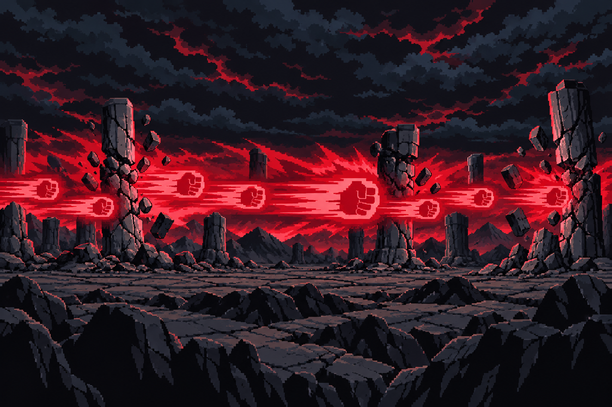
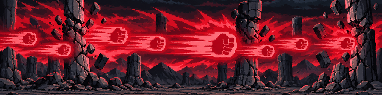
Needs user review. Eight v01 candidates are shown below. The fitted images are candidate-only packer outputs at the final UI dimensions; approval still applies to each source image.
Goku title-style v02 and Luffy title-style v01 are user-approved references. Backdrops have no identity inputs. Raw originals and fitted candidates are both shown. Some backdrop detail may read painterly at source size. Candidate pack output had zero warnings; in-game review is pending. FG audit: all four remain technical HOLD (above the 48-color limit; arm crop / face-volume issues below). These holds do not replace your art decision.
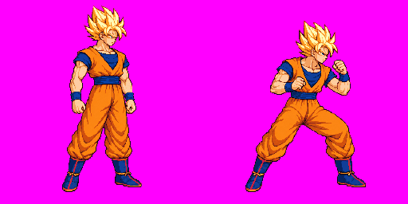


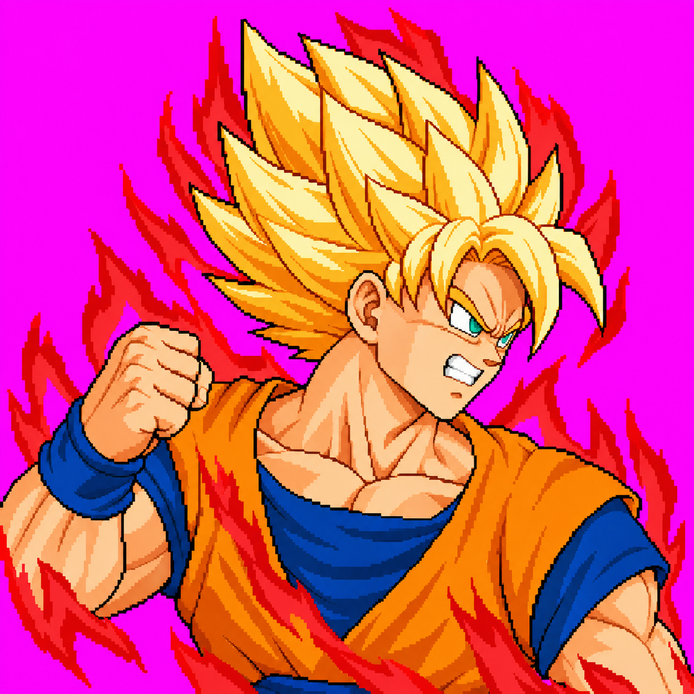
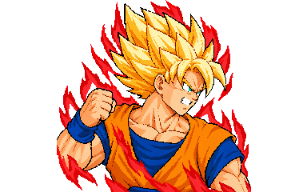
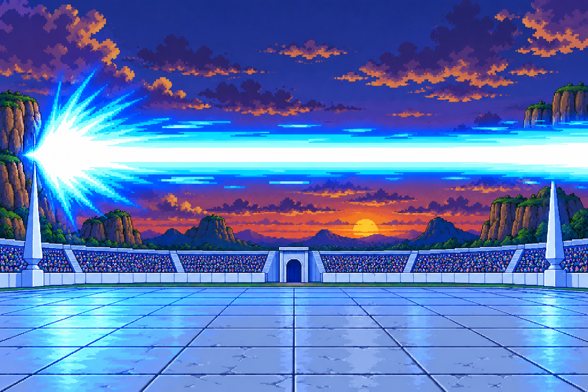
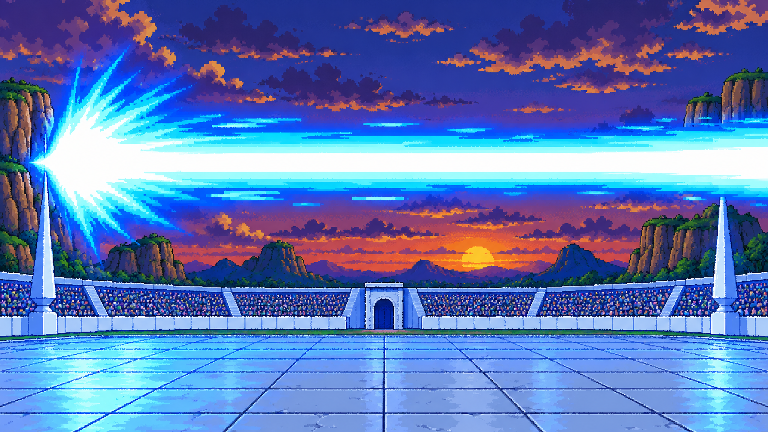
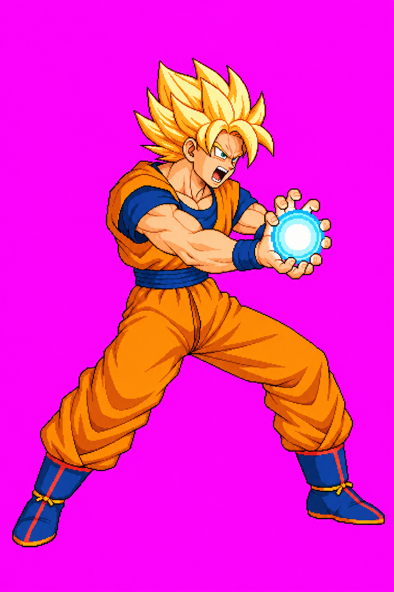
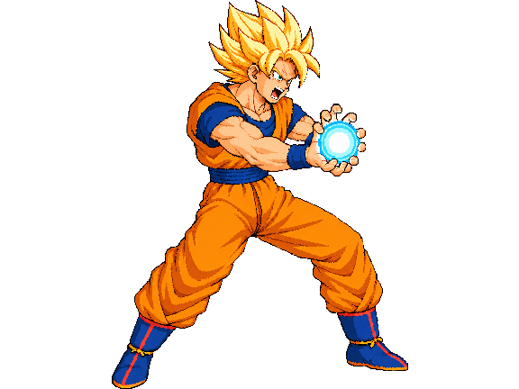

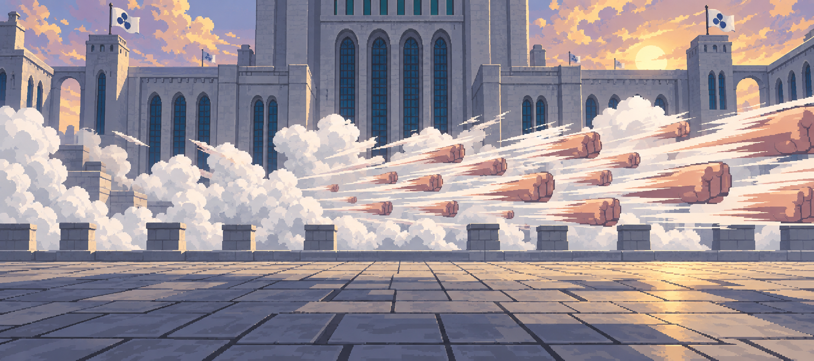
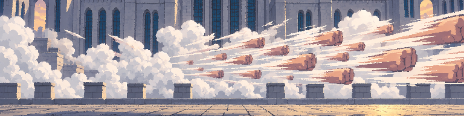
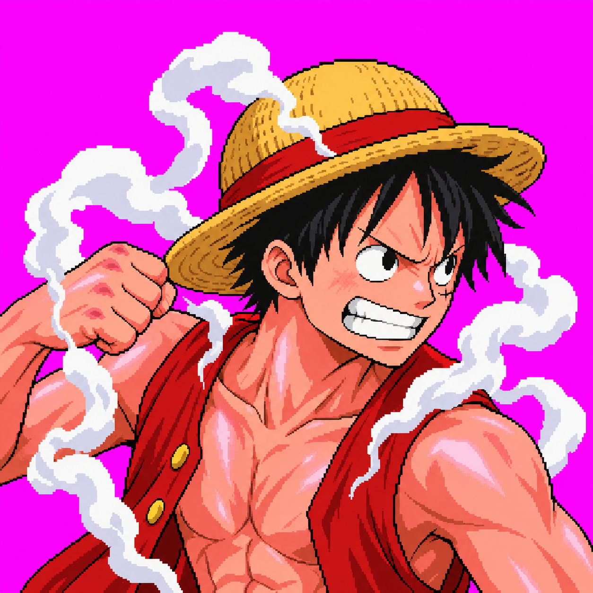
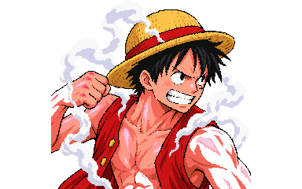
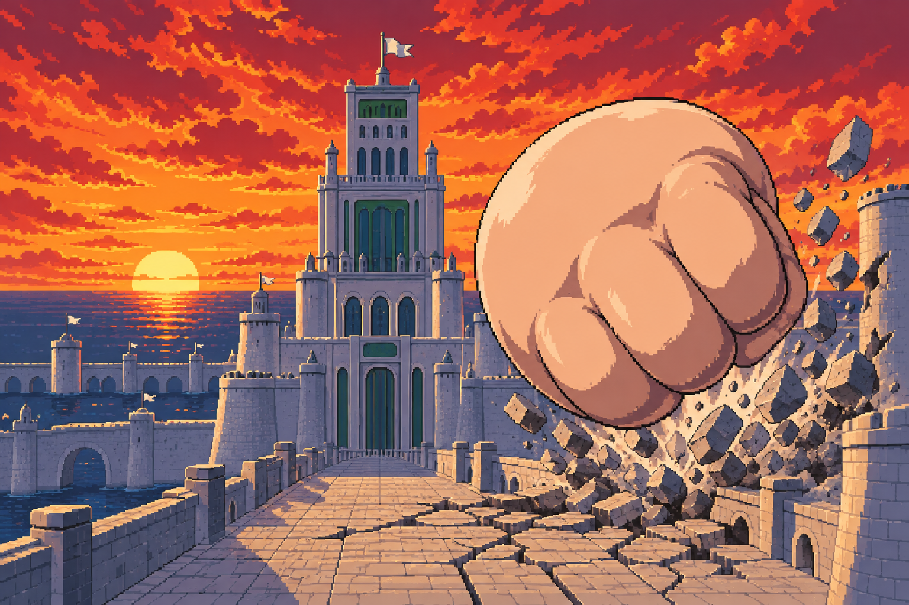
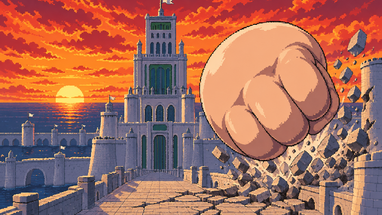
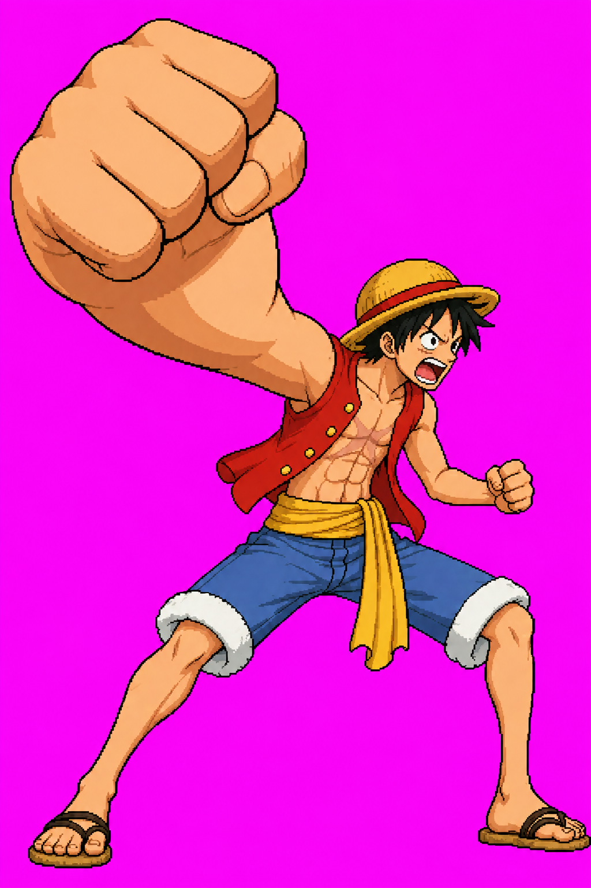
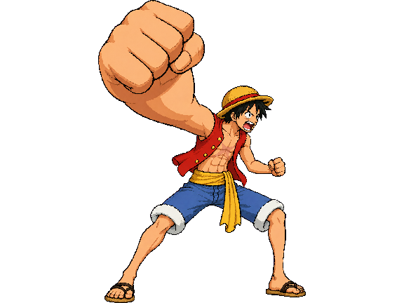
All four cutouts have binary alpha and clean magenta removal, but exceed 48 fitted colors: Goku SUPER 12,461; Goku ULT 21,178; Luffy SUPER 11,703; Luffy ULT 15,587. Goku SUPER and Luffy SUPER arms crop at the raw side edges. Luffy SUPER eyes/shoulders read rounder/heavier than his approved reference; Goku ULT shoulder/arm volume looks heavier, with pose foreshortening uncertainty. Luffy ULT sandal touches the raw right edge. These are technical holds, not approvals. Full measurements are in the audit report.